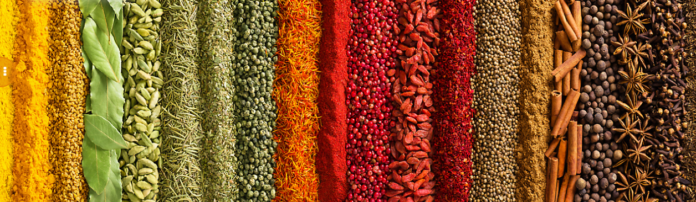
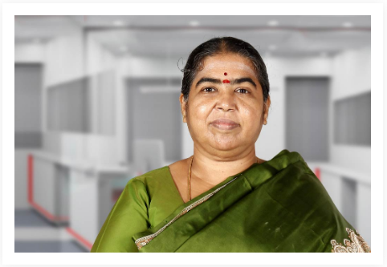
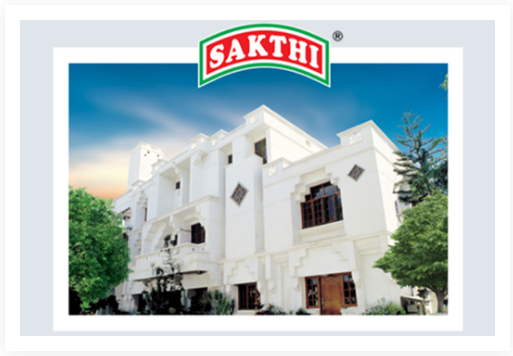
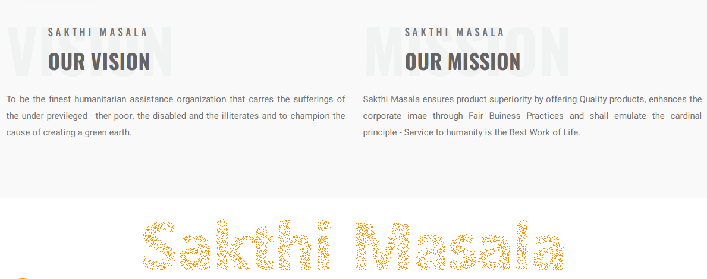

TH QUEEN OF SPICES
SAKTHI MASALA
The Queen of Spice and Spice products had its birth as a cottage industry with a small investment of Rs. 10,000/- The founder Dr.P.C.Duraisamy ventured into trading turmeric in 1977 and then into manufacturing pure spice powders like turmeric powder, chilli powder, coriander powder and expanded his expertise into producing various masala powders. He promoted Sakthi Trading Company and marketed his products in the brand name SAKTHI.
Mr.P.C.Duraisamy
The story may look like a miracle, but the hard work, the pot holes and the bumps on the way and the stormy inclement weather are known only to him. The person who stood behind him for all his achievements was his business partner and understanding life partner Dr.Santhi Duraisamy, the Director of the Company.

Dr.Santhi Duraisamy
Trust is also having a pharmacy and a clinical laboratory to provide service at concessional rates. The trust through its Government approved Special Schools, “Sakthi School for Intellectual Disabled” “Sakthi Autism Special School”, Sakthi Autism Early Intervention Centre” provides free education and therapies to the differently abled. The other social activities of the trust are tree plantation through the project Thalir for environmental protection, Vazhikatti a project for the benefit of Government school students by establishing full pledged libraries in 6 Government Schools & established a digital library in Govt. Boys Hr. Sec. School, Perundurai. Providing Books to 41 Government schools & News papers to 6 Government Schools, providing vocational training for students in 6 adopted Government schools, providing cash award and certificates every year to all the Government school toppers numbering over 320 in 10th and 12th standards in Erode District, providing educational assistance to over 650 students to pursue higher studies, educating public through media regarding providing employment opportunities to the differently abled, empowerment of women rain water harvesting and environmental protection. Every year 25 girl students from Government schools of Erode district are given free education of their choice at Sathyabama University, Chennai. The project Virutcham offers free education to the economically backward students from agricultural families for pursing their degree courses by getting admission in Vellalar Educational Institutions, Erode. The trust also offers donations for national calamities and for other social causes like desilting of ponds, Construction of check dams, laying of tar roads in rural areas, providing basic amenities like water tanks, toilets, additional buildings for Government schools and providing medical equipment, ambulance, renovation, construction of building to Government / private trust hospitals. All these activities are in tune with the cardinal principle of the trust Service to Humanity is the Best Work of Life.
He established Sakthi Masala Private Limited in 1997 with his understanding and supporting life partner Dr.SanthiDuraisamy as the Director. Since then they did not look back as the growth curve of the company keep its upward movement till today. Sakthi Masala today has got the unique blend of tradition and technology. The secret behind the success of Sakthi Masala is its best business practices. The raw materials of the company are the agricultural produces. Sakthi Masala gives value addition to them and helps the farmers of the country to market their produce for a better price. The watch word of the company is Quality. It offers quality products to the consumers for which Sakthi Masala was awarded National Award for Quality Products Award thrice by Government of India during the years 1994, 2005 and 2012. The objectives of Sakthi Masala is to offer quality products at affordable price to the consumers by adhering to Fair Business Practices for which it was honoured with jamnalal Bajaj Award four times during 1992, 2001, 2012 and 2020 by the Council for Fair Business Practice, Mumbai. Today the company manufactures over 50 varieties of pure spice powders and masala powders, over 15 varieties of pickles, pappad, flours, edible oil, etc. The products are marketed through a strong and dedicated dealership network throughout the country and overseas. The company provides employment opportunities to the people from rural areas, giving priority to women and differently abled persons. The company uses non-conventional energy resources like solar energy and wind energy for its manufacturing activity and other uses. To fulfill its corporate social responsibility the company has founded Sakthidevi Charitable Trust in 1997 which is the social arm of Sakthi Masala Private Limited. The trust provides free medical consultation to the general public and employees through Sakthi Hospital.

Sakthi Masala
